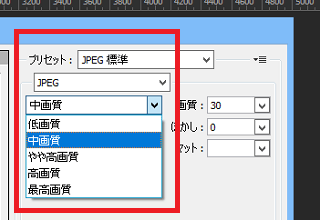
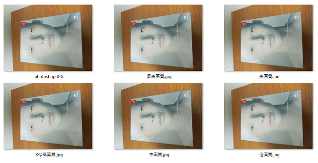
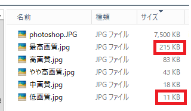
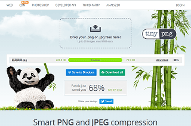

画像の容量を削減する方法
ホームページで画像を使用する際は、容量を削減してから使用することをおすすめします。
一般的に、ZIPなどでファイルを圧縮する際、解凍してもデータのロスはありませんが、データの損失なく元通りに復元できる方法はロスレス圧縮と呼ばれています。
それに対して、JPGやPNGなど画像の容量を削減する際はロッシー圧縮と呼ばれており、圧縮後はデータのロスが生じて画質が劣化するものの、人間の目ではその違いが分からないため、画質への実質的な影響なく容量を削減することができます。
Photoshopで画像の容量を削減する方法
こちらはデジカメで撮影したPhotoshop DVDの画像ですが、容量を削減していない状態では「7,500KB」となっています。
この状態から、Photoshopの場合は「ファイル」→「WEB用に保存」の箇所で画像サイズや画質を調節することができます。
まずは画像サイズを縮小して容量を削減しますが、320px～640pxあたりに縮小するなり、トリミングしてから使うことをおすすめします。画像のサイズを小さくすれば、それだけで容量が削減されるはずです。
次に、画質を落として容量を削減します。

「低画質～最高画質」までありますが、同じ画像サイズでそれぞれの画質を比較してみますと、その差異はほとんど感じられません。

人間の目では画質の違いは感じられないものの、容量については最高画質が「215KB」であるのに対し、低画質は「11KB」まで削減されています。

元の画像が「7,500KB」であるのに対し、最高画質では「215KB」となっており、さらに低画質まで圧縮すると「11KB」になります。
個人的な印象ですと、「低画質」の場合は画質の荒いケースもありますが、「中画質～最高画質」についてはどれを選択してもあまり違いがないため、「中画質」あたりがおすすめです。
中画質で圧縮した場合ですと、320px程度の大きさだと数十KB程度、640px程度の大きさでもほぼ100KB以内には収まるはずです。
最近では構造化データで1,200px以上の画像の大きさが推奨されており、サイト上で大きな画像を使用するケースも多くなってきましたが、そのまま使うと容量がかなり大きくなってしまいます。
画像の容量が大きい場合、モバイル環境ではサイトの表示速度が遅くなる可能性もあり、それが元で検索エンジンのランキングに影響してしまう可能性もあるため、できるだけ容量を圧縮してから使用されるとよいでしょう。
TinyPNGで画像を圧縮する方法
Photoshopを利用していない場合、ネット上で無料で簡単に圧縮できるサイトがあるので、そちらを利用することをおすすめします。いくつかの圧縮サイトがありますが、TinyPNGでは複数の画像を選択して圧縮することができます。
→ TinyPNG
無料の場合ですと、5MB以上の画像には対応していませんが、キャプ画などのPNG画像ならたいていは圧縮できるはずです。画像サイズをペイントなどで小さくしたのち、画質についてはTinyPNGにて圧縮するとよいでしょう。
例えば、上記の最高画質のJPG画像をTinyPNGで圧縮してみると「220KB」から「70.9KB」に削減されましたが、Photoshopの「WEB用に保存」の高画質あたりまでは圧縮できるかもしれません。

ただ、PNG画像については、PhotoshopでもTinyPNGでもそれほど違いはないと感じています。
Photoshopの場合はソフトを起動するまでに時間がかかりますので、簡単な画像でしたらWindows付属のペイントでサイズを調整しつつ、画質についてはTinyPNGを使った方が簡単かもしれません。